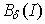
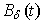
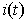

1. Наименование и цель работы.
2. Расчётные и экспериментальные схемы магнитных цепей с исходными значениями параметров.
3. Расчётные формулы и вычисления. Таблицы с занесенными предварительно вычисленными и измеренными величинами.
4. График зависимости  с оцифровкой шкал осей и характерных точек, и осциллограммы  и .
5. Выводы по работе.